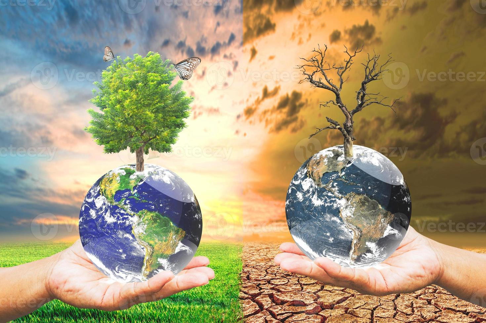

Warum ist Umweltschutz wichtig?

Unsere Umwelt ist bedroht durch Verschmutzung, Klimawandel und Abholzung. Um sie zu schützen, müssen wir bewusst handeln.
Viele dieser Probleme entstehen durch unseren Alltag – etwa durch hohen Energieverbrauch, übermäßigen Konsum oder die Nutzung von Plastik. Doch genau hier liegt auch unsere Chance: Jeder von uns kann mit kleinen Veränderungen einen wichtigen Beitrag leisten. Schon einfache Maßnahmen wie Mülltrennung, Energiesparen oder das Vermeiden von Einwegprodukten helfen, die Umwelt zu entlasten.
Auch der Klimawandel zeigt deutlich, wie dringend wir handeln müssen. Steigende Temperaturen, extreme Wetterereignisse und das Schmelzen der Pole sind nur einige der Folgen, die unsere Erde bereits spürt. Indem wir nachhaltiger leben, können wir dazu beitragen, diese Entwicklungen zu verlangsamen und die Natur zu schützen.
Ein weiterer wichtiger Punkt ist der Erhalt unserer Wälder. Sie sind nicht nur Lebensraum für unzählige Tiere und Pflanzen, sondern auch entscheidend für unser Klima, da sie CO₂ speichern und Sauerstoff produzieren. Durch bewussten Konsum, wie den Kauf von regionalen und nachhaltigen Produkten, können wir helfen, die Abholzung zu reduzieren.
Gemeinsam können wir viel erreichen, wenn wir Verantwortung übernehmen und unser Verhalten überdenken. Jeder Schritt zählt – und je mehr Menschen mitmachen, desto größer ist die Wirkung für eine gesunde und lebenswerte Zukunft. 🌍🌱
Maßnahmen
- Müll vermeiden
- Recycling
- Energie sparen
- Erneuerbare Energien nutzen